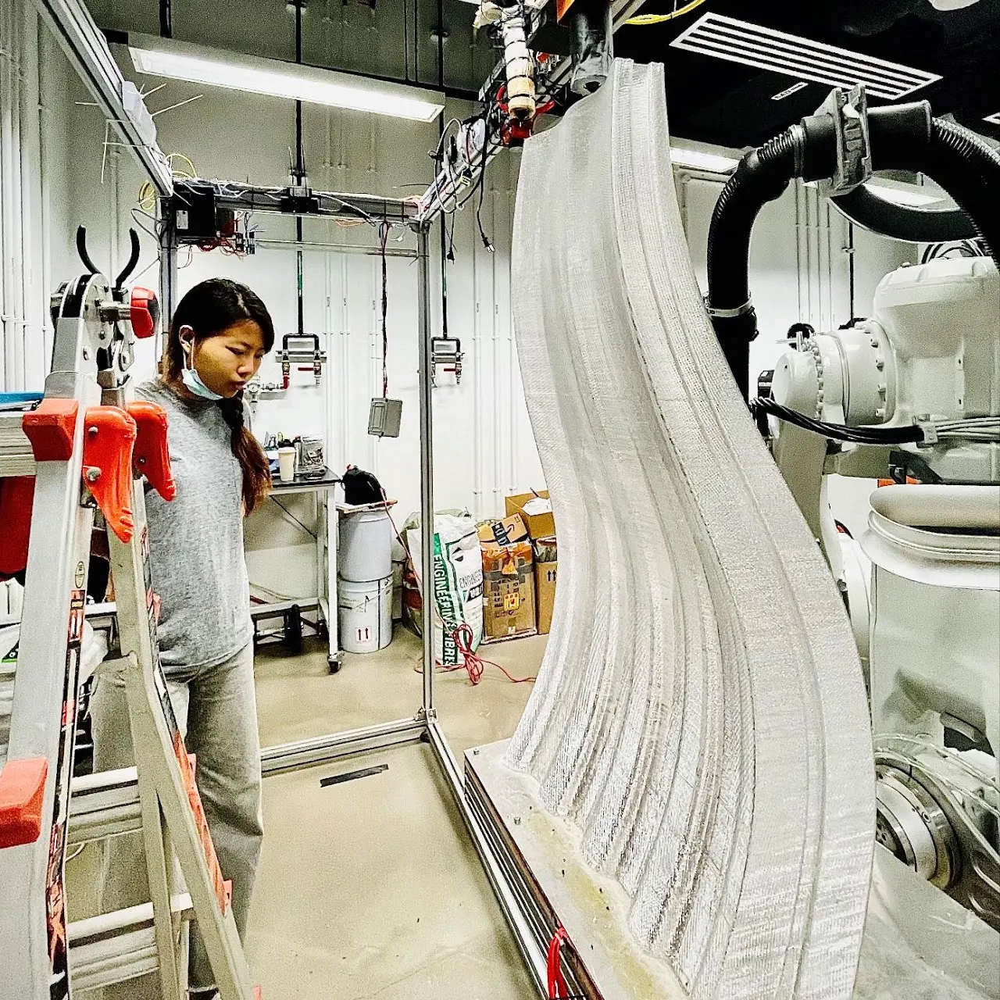
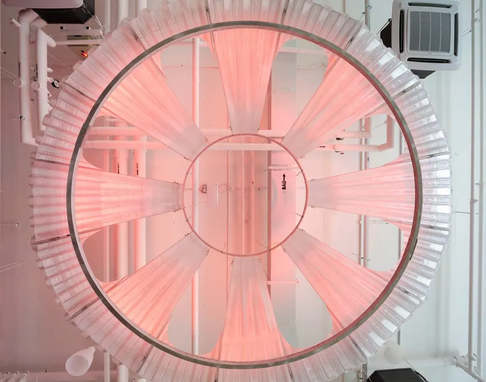
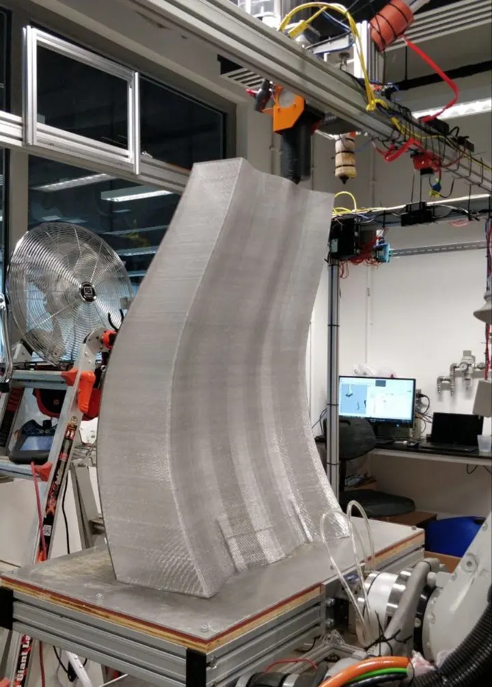
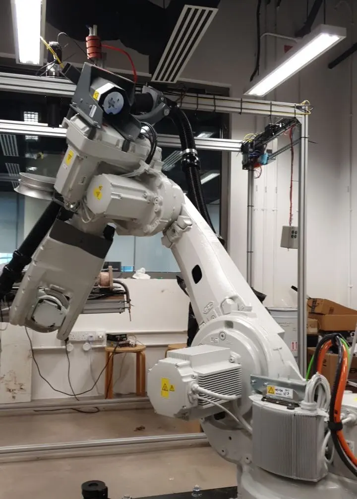

research
DB Schenker Chandelier

- context
- SUTD AirLab
- year
- 2021
- type
- research
The DB Schenker's Upcycling Hub in Singapore, designed by Airlab SUTD, demonstrates the future of manufacturing by presenting novel ways to respond to the climate crisis by recycling waste material. The project sets a platform to challenge our value systems and traditional understanding of waste material, redefining our relationship with waste by creating beautiful furniture with discarded plastic and wood through digital design and sustainable manufacturing methods.
The chandelier was 3d printed using a large scale pellet extruder and a large 6 axis ABB robot. The pellets were made of recycled PETG bottles, and printing tool over 30 hours for each module for a total of 12 modules. I was personally in charge of the entire printing process, from monitoring the flow of the material and the print quality control, as well as the original generation of the robotic toolpath as well as the design of certain fastening details.






